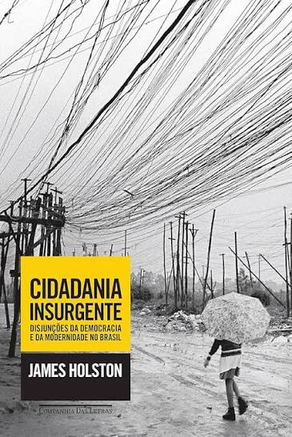
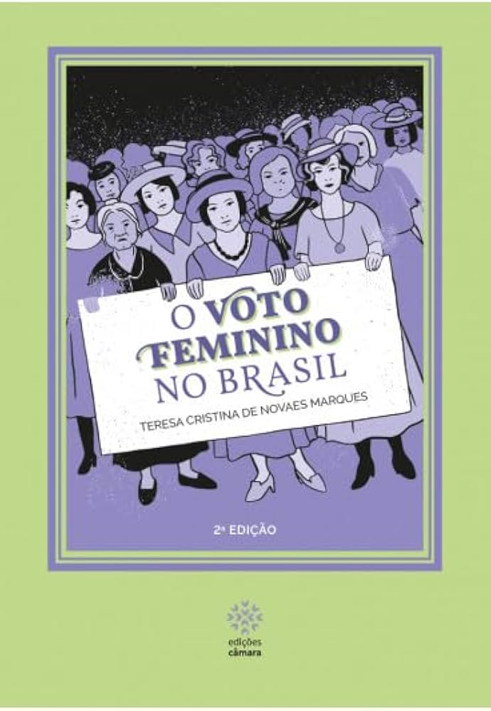

História · 1ª série do Ensino Médio · Livro de apoio
Cidadania
em disputa
Duas obras para entender quem tem direitos — e quem luta por eles
James Holston mostra como a cidadania brasileira foi construída de modo desigual e como moradores da periferia a reinventaram. Teresa Marques mostra que as mulheres precisaram de mais de cem anos de campanha para conquistar o direito de votar.
Colégio Estadual Rodolfo de Oliveira · História · 2026
Antes de ler
O que você vai encontrar aqui
Este material continua a conversa do livro principal sobre os “outros autores” da cidadania no Brasil.
No livro principal, você viu que José Murilo de Carvalho explica a cidadania pela ordem em que os direitos chegaram ao Brasil e que Wanderley Guilherme dos Santos a explica pelo vínculo com a profissão. Agora vamos conhecer mais duas leituras: a de um antropólogo, James Holston, que olha para as periferias das cidades, e a de uma historiadora, Teresa Cristina de Novaes Marques, que acompanha a longa luta das mulheres pelo voto.
Cidadania insurgente
Por que existem cidadãos “de primeira” e “de segunda” e como moradores da periferia conquistaram direitos construindo a própria casa e o próprio bairro.
O voto feminino no Brasil
Quem foram as mulheres que enfrentaram deputados, juízes e jornais para votar e ser votadas, e por que isso levou tanto tempo.
Dois olhares, uma pergunta
O que as duas obras mostram, juntas, sobre direitos que não chegam a todos ao mesmo tempo.
Habilidades em foco
| Habilidade | O que você vai fazer |
|---|---|
| (EM13CHS101) Identificar, analisar e comparar diferentes fontes e narrativas expressas em diversas linguagens, com vistas à compreensão de ideias filosóficas e de processos e eventos históricos, geográficos, políticos, econômicos, sociais, ambientais e culturais. | Ler trechos de discursos, leis e entrevistas e comparar o que dizem sobre quem pode ter direitos. |
| (EM13CHS605) Analisar os princípios da declaração dos Direitos Humanos, recorrendo às noções de justiça, igualdade e fraternidade, identificar os progressos e entraves à concretização desses direitos nas diversas sociedades contemporâneas e promover ações concretas diante da desigualdade e das violações desses direitos em diferentes espaços de vivência, respeitando a identidade de cada grupo e de cada indivíduo. | Identificar os entraves e as conquistas de direitos no caso das mulheres e dos moradores da periferia. |
Quando você pensa em cidadania, talvez imagine algo que todo brasileiro tem: certidão de nascimento, título de eleitor, CPF. O antropólogo James Holston, professor da Universidade da Califórnia, em Berkeley, faz uma pergunta mais incômoda: ter o título de cidadão garante os mesmos direitos a todos?
Para responder, ele escreveu Cidadania insurgente: disjunções da democracia e da modernidade no Brasil, publicado nos Estados Unidos em 2008 e no Brasil em 2013. O livro percorre a história do país desde o período colonial e chega às periferias de São Paulo nos anos 1970 e 1980, durante a ditadura militar e a redemocratização.

Quem é o autor e o que ele estudou
Holston é antropólogo e estuda o Brasil há décadas. Antes de escrever sobre cidadania, pesquisou a construção de Brasília. Depois, passou anos acompanhando bairros da periferia de São Paulo. Em uma entrevista de 2014, ele disse que as classes mais humildes “têm noção do direito de ocupar, de viver, de circular” (HOLSTON, 2014). Essa frase resume o que ele encontrou: pessoas pobres que, mesmo sem muitos direitos garantidos, passaram a exigi-los.
Cidadania diferenciada: todos são cidadãos, mas não do mesmo jeito
Pela Constituição de 1824, eram cidadãos brasileiros os nascidos no Brasil, inclusive os libertos; os escravizados ficavam de fora. Só que ser cidadão no papel não significava ter os mesmos direitos. Quem tinha renda mais alta podia votar e ser votado para mais cargos; mulheres não votavam; e a terra, que dava poder e prestígio, tornou-se cada vez mais difícil de obter para os pobres depois da Lei de Terras de 1850, que passou a exigir a compra como forma de acesso.
Esse padrão atravessou o século XIX e continuou na República. A Lei Saraiva, de 1881, por exemplo, exigiu renda mínima e instrução para votar, reduziu o número de eleitores e, na prática, afastou os analfabetos das urnas. Só em 1985 eles voltaram a votar, e a Constituição de 1988 tornou o voto do analfabeto facultativo. Veja que essa história se cruza com a das mulheres, que você vai estudar no capítulo 2.
| Autor | Onde ele olha | Ideia central |
|---|---|---|
| José Murilo de Carvalho | A sequência dos direitos ao longo do tempo | No Brasil, os direitos sociais chegaram antes dos civis e dos políticos (“estadania”). |
| Wanderley Guilherme dos Santos | A relação entre profissão e direitos | Só tinha direitos sociais quem exercia uma profissão reconhecida pelo Estado (“cidadania regulada”). |
| James Holston | As categorias sociais e a luta dos grupos populares | Os direitos são distribuídos de forma desigual (“cidadania diferenciada”), e os excluídos criam novos direitos (“cidadania insurgente”). |
Cidadania insurgente: a periferia constrói direitos
A palavra insurgente vem de insurgir-se, isto é, levantar-se contra algo. Holston chama de cidadania insurgente a prática de pessoas que, vindas de baixo, desafiam a ordem desigual e inventam novas formas de exigir direitos.
O exemplo central do livro é a periferia de São Paulo. A partir dos anos 1950, a cidade cresceu e os trabalhadores, sem condições de pagar por terrenos bem localizados, compravam lotes baratos e distantes, muitas vezes sem a documentação em ordem. Ali faziam a autoconstrução: levantavam a casa aos poucos, nos fins de semana, com a ajuda de parentes e vizinhos.
Construir o próprio lugar
Famílias compravam terrenos baratos na periferia e erguiam a casa com as próprias mãos, sem ruas, esgoto ou transporte.
Medo do despejo
No início dos anos 1970, muitos moradores foram acusados de ocupar terrenos “invadidos” e ameaçados por capangas contratados por empresas e particulares.
Associações e Justiça
Sem dinheiro, os moradores criaram associações de bairro e passaram a usar o próprio sistema jurídico para defender suas casas.
Segundo Holston, nesse processo mudou a maneira como essas pessoas se enxergavam. Elas deixaram de pedir favores e passaram a reivindicar direitos: à moradia, à regularização do terreno, à água, à rua asfaltada, ao transporte, ao lugar na cidade. Isso aconteceu justamente durante a ditadura militar, quando a participação política era reprimida, o que mostra que a cidadania também se constrói fora das eleições.
“As classes mais humildes têm noção do direito de ocupar, de viver, de circular.”
Democracia disjuntiva: eleições sim, direitos nem sempre
O subtítulo do livro fala em disjunções da democracia. Disjunção quer dizer desencontro, algo que não se encaixa. Holston observa que, depois do fim da ditadura, o Brasil passou a ter eleições livres e direitos políticos amplos, mas isso convive com violência, impunidade e desrespeito a direitos civis, principalmente nas periferias. A democracia funciona nas urnas, mas falha no dia a dia de quem depende de uma justiça lenta ou convive com a violência policial.
Pense na rua onde você mora ou onde a sua escola fica. Quem abriu essa rua, instalou a luz ou conseguiu o ponto de ônibus? Foi um favor de algum político ou uma conquista de moradores organizados? Converse com um vizinho ou familiar mais velho e descubra a história do bairro. Essa pesquisa é um pequeno estudo de caso de cidadania insurgente.
Hoje parece natural que mulheres votem, mas no Brasil isso só foi garantido em lei em 1932. Antes disso, houve mais de cem anos de debates, pedidos recusados, jornais, passeatas e até uma festa de carnaval em favor do voto.
A historiadora Teresa Cristina de Novaes Marques, professora da Universidade de Brasília, reuniu essa história em O voto feminino no Brasil, publicado pela Câmara dos Deputados (1ª edição em 2018, 2ª edição em 2019). O livro foi pensado para o jovem leitor que começa a se interessar por política e mostra os momentos em que o Legislativo brasileiro discutiu a entrada das mulheres na vida política do país.

Igualdade para quem?
A autora começa lembrando que a palavra igualdade entrou no vocabulário político do Ocidente no século XVIII e se tornou um dos fundamentos das democracias. Mas, quando se dizia que “todos os homens são iguais”, nem todos eram incluídos de fato. As mulheres, consideradas incapazes de participar das decisões políticas, recebiam tratamento jurídico desigual. Esse é um caso claro do que Holston chamaria de cidadania diferenciada.
Império e 1891: a lei abre uma brecha e depois fecha a porta
A Lei Saraiva (1881) exigia renda mínima e aceitava diplomas como prova de qualificação. Com isso, abriu uma brecha: mulheres diplomadas poderiam votar? A dentista Isabel de Souza Mattos, do Rio Grande do Sul, conseguiu se registrar como eleitora em 1887. Mas, quando a República convocou eleições para a Constituinte em 1890, o presidente da mesa não a deixou votar.
Em janeiro de 1891, deputados defenderam emendas para dar o voto às mulheres, entre eles César Zama e Saldanha Marinho, cuja proposta recebeu 32 assinaturas. Ambas foram rejeitadas. Os opositores usaram argumentos como a defesa da família e a ideia do “cidadão-soldado”, segundo a qual só votaria quem pudesse lutar na guerra. Um deputado chegou a dizer que o voto feminino seria “imoral e anárquica” e provocaria a “dissolubilidade da família brasileira”.
“À mulher, como ao homem, deve competir a faculdade de preponderar na representação da sua pátria. [...] Ou estaremos fora do regímen das leis criadas pelos homens, ou teremos também o direito de legislar para todas.”
Mulheres organizadas: jornais, partido e federação
Barradas nas urnas, as mulheres inventaram outros caminhos de participação. Três delas aparecem com destaque no livro:
Josefina Álvares de Azevedo
Professora e jornalista. Criou o jornal A Família (1888) e escreveu a peça O voto feminino, encenada no Rio de Janeiro.
Leolinda Daltro
Professora. Em 1910, registrou o Partido Republicano Feminino. Organizou passeatas, abaixo-assinados e até um carro alegórico no carnaval de 1917. Criou a escola Orsina da Fonseca para formar mulheres para o trabalho.
Bertha Lutz
Bióloga, formada na França. Presidiu a Federação Brasileira pelo Progresso Feminino (1922), promoveu congressos e fez articulação política. Foi pacifista e discordava de Leolinda sobre como conquistar o voto.
Em dezembro de 1922, a federação de Bertha Lutz reuniu o Primeiro Congresso Internacional Feminista, no Rio de Janeiro, com a presença da sufragista norte-americana Carrie Chapman Catt, que havia liderado a campanha pelo voto feminino nos Estados Unidos, conquistado em 1920. Em 1927, a federação entregou ao Senado um abaixo-assinado com cerca de duas mil assinaturas a favor do projeto do senador Justo Chermont. A batalha foi perdida.
1932: enfim, eleitoras
Em 1930, Getúlio Vargas chegou ao poder. As feministas procuraram o novo governo e, em junho de 1931, foram recebidas no Palácio do Catete. Uma comissão de juristas propôs um voto com restrições: só viúvas ou solteiras com renda própria, e casadas somente com autorização do marido. Vargas revisou o texto, e o Código Eleitoral de 24 de fevereiro de 1932 reconheceu o voto feminino sem condições especiais.
As mulheres votaram pela primeira vez em âmbito nacional na eleição de 3 de maio de 1933, para a Assembleia Constituinte. Sete candidatas concorreram no Distrito Federal (então no Rio de Janeiro). Bertha Lutz foi a mais votada entre elas, com 16.423 votos, e ficou como primeira suplente do Partido Autonomista.
A primeira deputada
Em São Paulo, a médica e professora Carlota Pereira de Queirós ficou conhecida por coordenar a assistência aos feridos durante a revolta de 1932. Obteve a terceira maior votação do estado, na casa dos 176 mil votos, e se tornou a primeira mulher a ocupar uma cadeira na Câmara dos Deputados. Bertha Lutz assumiu como deputada em 1936, tornando-se a segunda.
As duas discordavam. Carlota defendeu que as mulheres jurassem a bandeira e prestassem serviços de assistência em troca do direito de votar. Bertha defendia direitos políticos sem condições. A proposta de Carlota foi derrotada em maio de 1934.
“Art. 108. São eleitores os brasileiros de um e de outro sexo, maiores de 18 anos, que se alistarem na forma da lei. [...] Art. 109. O alistamento e o voto são obrigatórios para os homens e para as mulheres, quando estas exerçam função pública remunerada.”
Em 1946, a nova Constituição tornou o voto obrigatório para homens e mulheres. Ivete Vargas foi deputada de 1950 a 1968, quando perdeu os direitos políticos pelo Ato Institucional nº 5. E só em 1988, com a Constituição atual, o direito de votar foi estendido aos homens e mulheres analfabetos.
Linha do tempo
- 1881Lei SaraivaReforma eleitoral que exige renda e instrução e torna o voto facultativo.
- 1887Isabel de Souza Mattos se registra eleitoraÉ a dentista que usou o diploma como prova de qualificação, mas foi barrada em 1890.
- 1888Jornal “A Família”Josefina Álvares de Azevedo faz campanha pelo voto feminino.
- 1891Constituinte rejeita o voto femininoAs emendas de Zama e de Saldanha Marinho são derrotadas.
- 1910Partido Republicano FemininoLeolinda Daltro registra o partido, que defende o sufrágio das mulheres.
- 1922Federação Brasileira pelo Progresso FemininoBertha Lutz lidera a entidade e organiza o Congresso Internacional Feminista.
- 1928Eleitoras no Rio Grande do NorteVotos de mulheres potiguares não são reconhecidos pelo Senado.
- 1932Código EleitoralDecreto de 24 de fevereiro reconhece o voto das mulheres.
- 1933–34Primeiras eleições e Constituição de 1934Carlota Queirós é eleita deputada federal.
- 1946Voto obrigatório para homens e mulheresA Constituição não retrocede quanto ao direito das mulheres.
- 1988Constituição atualEstende o voto a homens e mulheres analfabetos.
As duas obras tratam de assuntos diferentes, mas fazem a mesma pergunta: quem tem direito a ter direitos? Veja como elas se encontram.
| Holston | Teresa Marques | |
|---|---|---|
| Quem ficou de fora | Pobres, moradores da periferia, analfabetos, trabalhadores sem terra. | Mulheres, em especial as casadas, as pobres e as analfabetas. |
| Como a desigualdade foi organizada | Leis de terras, exigência de renda e de instrução, documentos de propriedade. | Interpretação da palavra “cidadãos” como “homens”, rejeição das emendas de 1891. |
| Como a luta aconteceu | Associações de bairro, autoconstrução, ações na Justiça. | Jornais, partido, abaixo-assinados, congressos, pedidos de alistamento nos cartórios. |
| O que mudou | Novos direitos à moradia, à regularização e à cidade, ainda incompletos. | Voto e candidatura a partir de 1932, consolidados na Constituição de 1946. |
Esta é uma leitura que fazemos neste material, juntando as duas obras; os autores não escreveram essa comparação.
- A lei serve a quem? Nos dois casos, a lei foi usada para excluir, mas também virou instrumento de luta: moradores recorreram à Justiça para defender a casa, e mulheres foram aos cartórios eleitorais pedir o alistamento.
- Direito no papel, direito na prática. A Constituição de 1934 garantia o voto feminino, mas tornava o voto obrigatório para as mulheres apenas quando tinham função pública remunerada e excluía os analfabetos. É a disjunção de que fala Holston.
- Direitos conquistados podem ser perdidos. As mulheres votaram em duas eleições antes do Estado Novo (1937). Já os moradores da periferia viram a cidadania insurgente nascer durante uma ditadura.
Retome o que aprendeu
- Explique com suas palavras a diferença entre cidadania diferenciada e cidadania insurgente.
- Cite um exemplo de cidadania diferenciada no caso das mulheres e um no caso dos moradores da periferia.
- Quais foram as estratégias usadas pelas sufragistas? Alguma delas lembra as associações de bairro estudadas por Holston?
Para consultar
Glossário
Palavras-chave das duas obras.
- Alistamento eleitoral
- Registro da pessoa como eleitora; sem ele, não é possível votar.
- Autoconstrução
- Construção da própria casa pelos moradores, aos poucos, com ajuda de parentes e vizinhos, sem projeto de engenheiro ou financiamento.
- Cidadania diferenciada
- Todos são membros da nação, mas os direitos e o tratamento da lei variam conforme a categoria social (conceito de Holston).
- Cidadania insurgente
- Cidadania criada “de baixo” por grupos que lutam contra a desigualdade e inventam novos direitos (conceito de Holston).
- Constituinte
- Assembleia eleita para escrever uma nova Constituição.
- Democracia disjuntiva
- Democracia em que direitos políticos convivem com violência, impunidade e desrespeito a direitos civis (Holston).
- Deputado classista
- Representante de sindicatos e associações profissionais, escolhido por empregados ou empregadores em 1933.
- Estadania
- Termo de Carvalho para a busca de direitos pela aliança com o Estado, e não pela participação independente.
- Lei de Terras (1850)
- Lei que estabeleceu a compra como forma de acesso à terra pública no Império.
- Lei Saraiva (1881)
- Reforma eleitoral do Império que exigiu renda e instrução para votar e tornou o voto facultativo.
- Periferia
- Áreas mais distantes do centro da cidade, em geral com menos infraestrutura e serviços públicos.
- Sufrágio
- Direito de votar. Quem lutava pelo voto feminino era chamada de sufragista.
- Voto censitário
- Voto que exige comprovação de renda mínima.
- Voto facultativo / obrigatório
- No facultativo, a pessoa vota se quiser; no obrigatório, a lei exige o voto.
Para consultar
Fontes e leituras
Obras e documentos usados neste material.
- HOLSTON, James. Cidadania insurgente: disjunções da democracia e da modernidade no Brasil. Tradução de Claudio Carina. São Paulo: Companhia das Letras, 2013. 488 p.
- HOLSTON, James. Insurgent citizenship: disjunctions of democracy and modernity in Brazil. Princeton: Princeton University Press, 2008.
- HOLSTON, James. Entrevista a Eleonora de Lucena. Folha de S.Paulo, 19 jan. 2014. Reproduzida em: INSTITUTO HUMANITAS UNISINOS (IHU), 21 jan. 2014. Disponível em: ihu.unisinos.br/527451.
- MARQUES, Teresa Cristina de Novaes. O voto feminino no Brasil. 2. ed. Brasília: Câmara dos Deputados, Edições Câmara, 2019.
- CARVALHO, José Murilo de. Cidadania no Brasil: o longo caminho. Rio de Janeiro: Civilização Brasileira, 2001.
- COMPANHIA DAS LETRAS. Cidadania insurgente: ficha e sinopse da obra. Disponível em: companhiadasletras.com.br.
Colégio Estadual Rodolfo de Oliveira · História · 1ª série do Ensino Médio · 2026